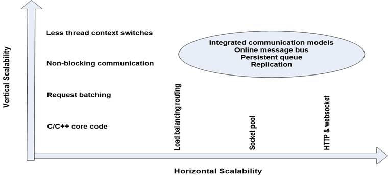
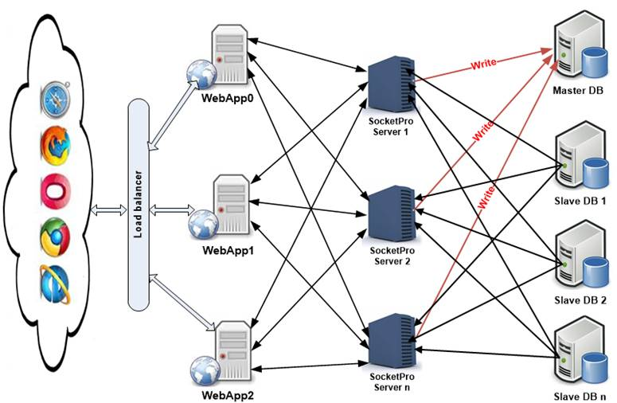
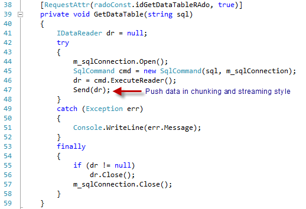
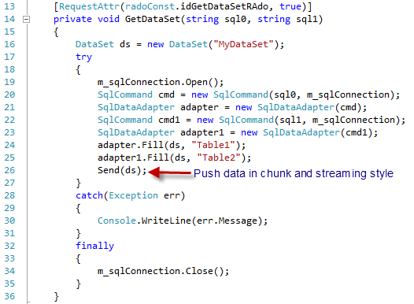
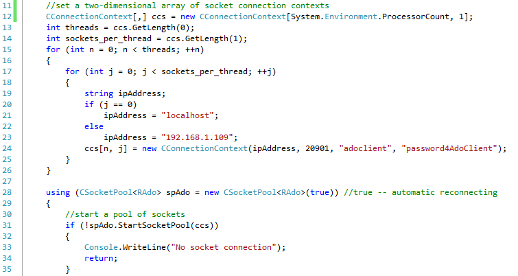
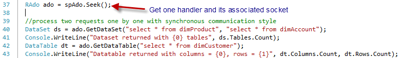
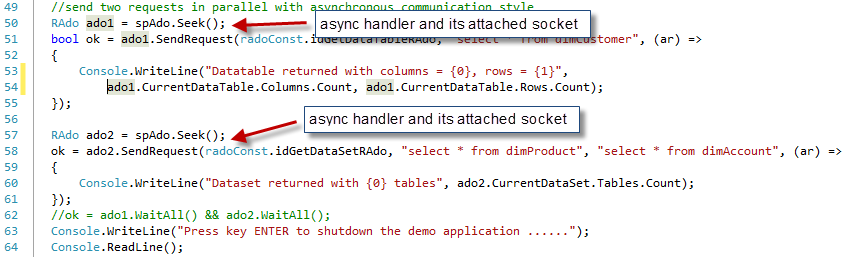

Tutorial 4 – Build Resilient, Responsive and Scalable Web Applications in a Few Hours
Contents:
Introduction
SocketPro ways for resilient, responsive and scalable web applications
· Vertical scalability
o Asynchronous communication
o Requests batch
o Less thread context switches
o C/C++ core code
· Horizontal scalability
o Client side socket pool
o Server Routing
o HTTP and websocket
· Caching, collaboration and real-time update
o Notification
o Persistent message queue
o Replication
Push any sizes of ADO.NET objects in chunk and streaming style from server to client
· DataReader
· DataSet
· DataTable
Retrieve ADO.NET objects from remote server synchronously and asynchronously
· A pool sockets pointing to different SocketPro servers
· Sync
· Async, parallel and wait
1. Introduction
As software developers we want our applications to be responsive and scalable to really engage users and make them pleased, but it's usually a challenge to write code that behaves like this. Responsiveness and scalability are essential quality-of-service attributes of Web applications. If your site sluggishly responds to user requests, your customers will not return and instead, will search for other company products instead. Scalability is equally significant when your site traffic becomes large. Bad responsiveness and scalability are rooted in one or more problems due to web browser side, web server front-tier, middle-tier, backend database tier and hard ware.
SocketPro provides a number of unique ways to help solve these problems especially in web server front-tier and middle-tier as well as web browser side. If your web server or middle tier requires local data caching from backend databases, SocketPro also is extremely helpful because you can easily realize real-time update on data caching through pushing changes from database by use of triggers, stored procedures
The tutorial sample projects are located at the directory ..\tutorials\(csharp|vbnet|ce)\rado.
2. SocketPro ways for resilient, responsive and scalable web applications
Figure 1 below visually summarizes features from SocketPro to help you create your responsive and scalable web applications.

Figure 1: SocketPro ways for better responsiveness and scalability of any types of applications
Vertical scalability: SocketPro adapters are created for all supported development languages, but its two core components, usocket and uservercore libraries, are written with direct use of C/C++ and raw system socket APIs developed over many years of experience in non-blocking communication as many top quality software applications require. SocketPro does not have many dependency layers, which helps application performance.
Furthermore, requests and returning results can be easily batched either manually or on internal algorithm as long as you use non-blocking communication. Request batching improves not only network efficiency but also processing speed at both client and server sides as shown in previous tutorials. Request batching works very efficiently especially on low-bandwidth and high-latency networks such as WIFI, DSL/Cable modems, satellite and remote communication.
SocketPro always uses non-blocking communication, although SocketPro does support synchronous requests indirectly by use of method WaitAll. Non-bolocking communication enables client and server computations to happen concurrently, which is also beneficial to application performance if there are many requests queued.
We measured thread-context switches with tools on window platforms. It is found that SocketPro requires much fewer thread context switches than MS WCF framework with a given number of requests.
Horizontal scalability: SocketPro has a number of features to ascertain that you can easily make your application scalable horizontally.
As depicted in the previous three tutorial samples, SocketPro uses socket pool at client side to build a set of socket connections to the same or different servers. We are going to asynchronously retrieve ADO.NET objects in parallel on master-slave architecture as shown in Figure 2 below.

Figure 2: An architecture for resilient, responsive and scalable web application with socket pool and master-slave databases
In addition to socket pool at client side, you can also use SocketPro’s server routing feature to execute load balancing. This feature will be demonstrated by tutorial 8: Treat SocketPro server as router for load balancing.
Additionally, SocketPro server also supports HTTP and websocket protocols. You can use this feature to enable communication between SocketPro and any devices as well as development environments through either HTTP or new web socket protocol. We are going to use tutorial 7: Access SocketPro by use of HTTP and WebSocket to show you its procedures on web browser by JavaScript.
Caching, collaboration and real-time update: Assuming you like to use caches at WebApp0 through WebApp2 and SocketPro server 0 through SocketPro server n to avoid cross-machine trips as much as possible, you may need all of the caches to be collaborated and updated in real-time fashion from databases or else. You can do so through SocketPro built-in chat service or/and persistent message queue.
In regards to SocketPro built-in chat service, please refer to tutorial 2: SocketPro secure communication and built-in bi-directional message pushes.
In regards to SocketPro persistent message queue, please refer to tutorial 1: Hello world for a simple client/server application and tutorial 5.
In addition to the two features above, you can use SocketPro’s replication feature to safely execute any changes in databases or to these caches in transaction style as exemplified in tutorial 6: Data replication by persistent message queue.
3. Push any sizes of ADO.NET objects in chunk and streaming style from server to client
Now, let’s witness how codes work with the method Send at server side on the architecture of the Figure 2.
DataReader: See the code snippet below in Figure 3 below. At line 47 in the code snippet, SocketPro provides a method Send to push all record data within an ADO.NET data reader from server to client. Internally, SocketPro pushes data in chunk and streaming style; each of chunks has a size about 10 kilobytes or more so that client and server are able to unpack and pack data respectively, concurrently and in parallel at the same time. Note that there it is unnecessary to pre-load all records in memory. All these unique features make your application much faster in comparison to MS WCF framework. Our performance tests show that SocketPro will be three times faster than MS WCF framework in general. If a data reader has many records with large data size, SocketPro will be ten or more times faster!

Figure 3: Push all records of data within DataReader from server to client in chunk and streaming style
DataSet: You can push a DataSet to a client in chunk and streaming style too as shown in Figure 4 below. Code snippet has already remarked on how simple it is to use.

Figure 4: Push all data within DataSet from server to client in chunk and streaming style
DataTable: Similarly, you can push all records within DataTable from server to client as you can see, even though we don’t, provide the entire code snippet in this figure.
Overall, we recommend you use DataReader approach instead of DataSet and DataTable if proper, because use of DataReader avoids pre-loading all records in memory, and reduces memory footprint if your application has to deal with many records.
4. Sync and async ways to get ADO.NET objects from remote server
You can obtain ADO.NET objects either synchronously or asynchronously. If you have to get multiple ADO.NET objects, you can attain them from server to client asynchronously and in parallel through different socket connections. We are going to demonstrate to you by code snippet at the conclusion of this tutorial. However, let’s show how to establish a pool of sockets pointing to different servers.
A pool sockets pointing to different SocketPro servers: See the below Figure 5.

Figure 5: Prepare a two-dimensional array of connection contexts for starting a pool sockets pointing to different servers
First of all, we use the codes in lines 12 through 26 to prepare a two-dimensional array of connection contexts pointing to different servers. Afterwards, we start a pool of sockets in line 31.
Sync: After establishing a pool of socket connections, we can use the following code to get ADO.NET objects synchronously one-by-one using one socket connection.

Figure 6: Get ADO.NET objects synchronously in one-by-one style using one socket connection
As shown in Figure 6 above, we search for an async handler from a pool first. Afterwards, we send one request in line 40 and another in line 42 to get DataSet and DataTable synchronously using the same socket connection, respectively.
Async, parallel and wait: The following code snippet is preferred over the one above in case you have multiple requests for ADO.NET objects or others.

Figure 7: Fetch ADO.NET objects from server asynchronously and in parallel by use of multiple socket connections
We get two async handlers and their socket connections in lines 50 and 57. Afterwards, we send two asynchronous requests in lines 51 and 58 for DataTable and DataSet objects, both respectively in parallel. Note that two socket connections may point to either the same or different servers, which fully take advantages of multiple SocketPro servers and multiple master-slave databases as shown in the previous architecture of Figure 2.
Finally, it is optional if you choose to use the method WaitAll to put a barrier as shown in line 62. The above approach can be easily coupled with .NET async task as shown previously in tutorial 1.